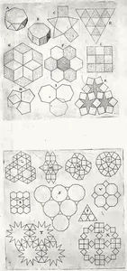
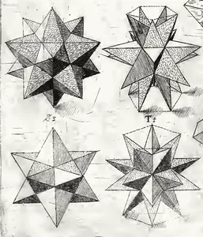
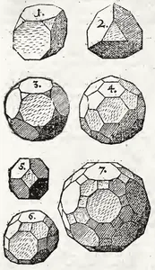

Book II: On the Congruence of Figures¶
Harmonices Mundi Liber II: Architectonicus, seu ex Geometria Figurata, de Figurarum Regularium Congruentia in Plano vel Solido (Linz, 1619)
Outline of Book II¶
Definitions: Planar and Solid Congruence
In the First Book we contemplated regular plane figures singly, examining which of them are knowable by inscription in a circle; now in the Second Book—which may rightly be called Architectonic—we consider their sociability and mutual fitting together (congruentia), inquiring which regular and star polygons join edge-to-edge either to pave an entire plane continuously without gaps, or to close up in three dimensions into a uniform solid body.

Propositions I–XX: The Eleven Uniform Planar Tilings
First, three and only three species of pure regular plane congruence fill the plane using a single polygon species:

Figure Aa: Pentagonal & Star-Pentagram Congruence
Although regular pentagons ($108^\circ$) and regular decagons ($144^\circ$) cannot form a uniform vertex-transitive tiling of convex polygons alone, if we admit the five-pointed star (stella quinquangula, $\{5/2\}$, tip angle $36^\circ$, re-entrant pocket $72^\circ$), marvelous fivefold flower-like congruences blossom across the plane! Around a central decagon DEC0 (D0 in the left panel below), five regular pentagons and five star pentagrams interlock seamlessly because:

Proposition XXV: The Five Regular Platonic Solids
The most perfect and regular congruences of plane figures for forming a solid figure are five.

Proposition XXVI: The Two Regular Star Polyhedra
To the most perfect regular congruences may also be added two other congruences, formed from twelve plane pentagonal stars; and two semi-solid congruences, formed from octagonal and decagonal stars.

Proposition XXVII: The Two Rhombic Polyhedra
Semiregular plane figures—namely plane rhombi—also join in most perfect solid congruence, and in exactly two ways.

Proposition XXVIII: The Thirteen Archimedean Solids
Of perfect solid congruences of the lower degree there are thirteen species, from which arise the thirteen Archimedean Bodies.